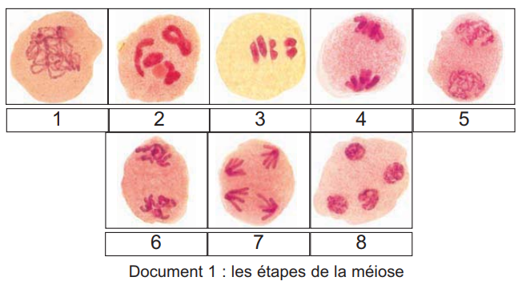
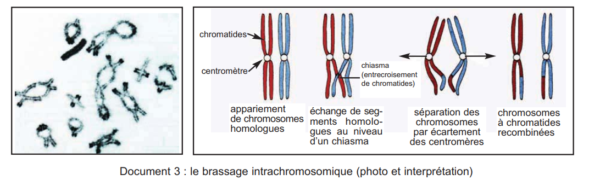
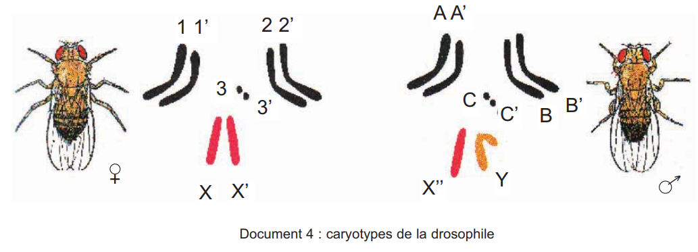

🔀 La méiose — source de diversité génétique
Doc 1 — Étapes photographiques de la méiose
8 photos à identifier (p.87)

Doc 2 — Brassage interchromosomique
4 cas de migration + gamètes (p.87)

Doc 3 — Brassage intrachromosomique
Photo chiasma + crossing-over (p.88)

Doc 4 — Caryotypes drosophile
Mâle et femelle 2n=8 (p.88)

📊 Brassage interchromosomique
- Migration aléatoire chromosomes homologues en anaphase I
- Nombre de gamètes = 2ⁿ (n = paires de chromosomes)
- Homme (n=23) : 2²³ ≈ 8,4 millions
🔄 Brassage intrachromosomique
- Crossing-over en prophase I
- Entre chromatides non sœurs de chromosomes homologues
- Point d'échange = chiasma
- Crée gamètes recombinants
🎲 Fécondation
- Union aléatoire de 2 gamètes
- Amplifie le brassage : 2ⁿ × 2ⁿ = 2²ⁿ
- Chaque individu = génétiquement unique
🔀 Bilan — Sources de diversité
- Brassage interchromosomique : 2ⁿ gamètes par migration aléatoire en anaphase I
- Brassage intrachromosomique : crossing-over → gamètes recombinants
- Fécondation : union aléatoire → polymorphisme de la descendance